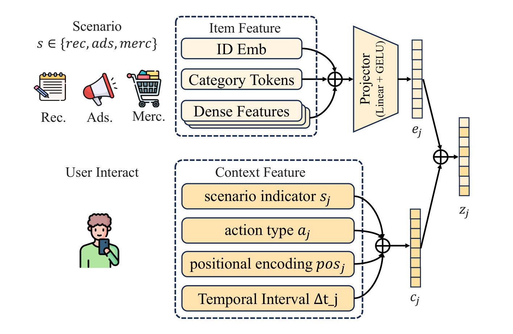
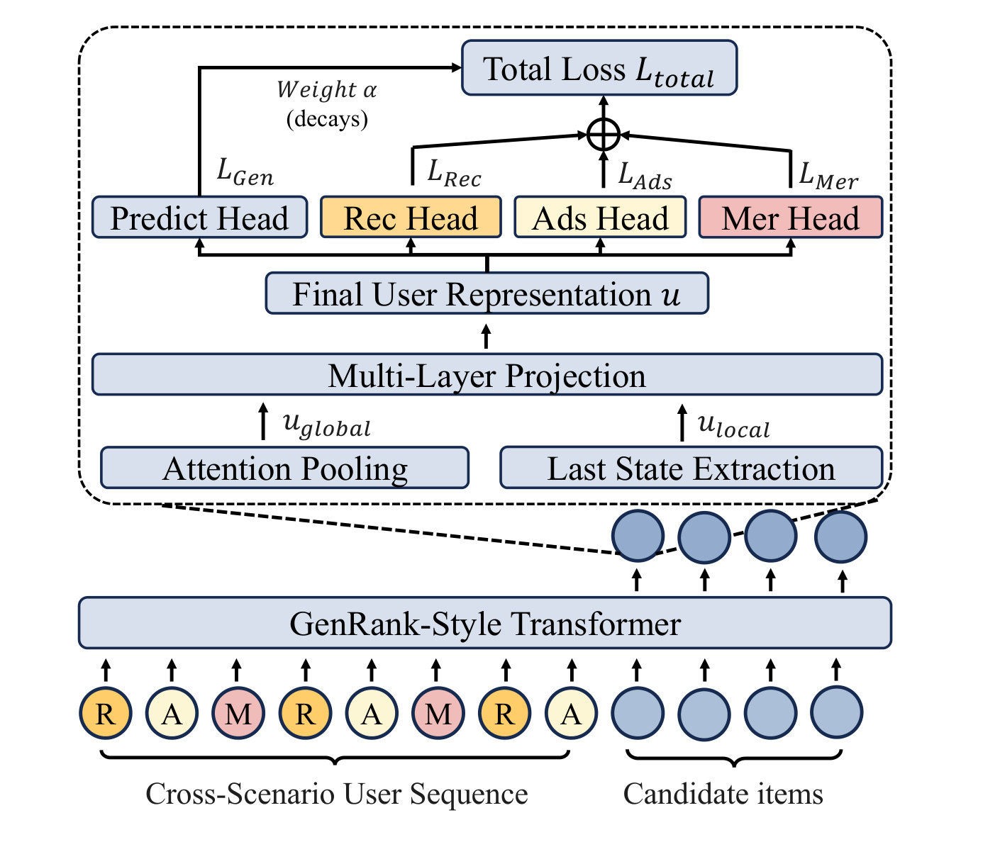
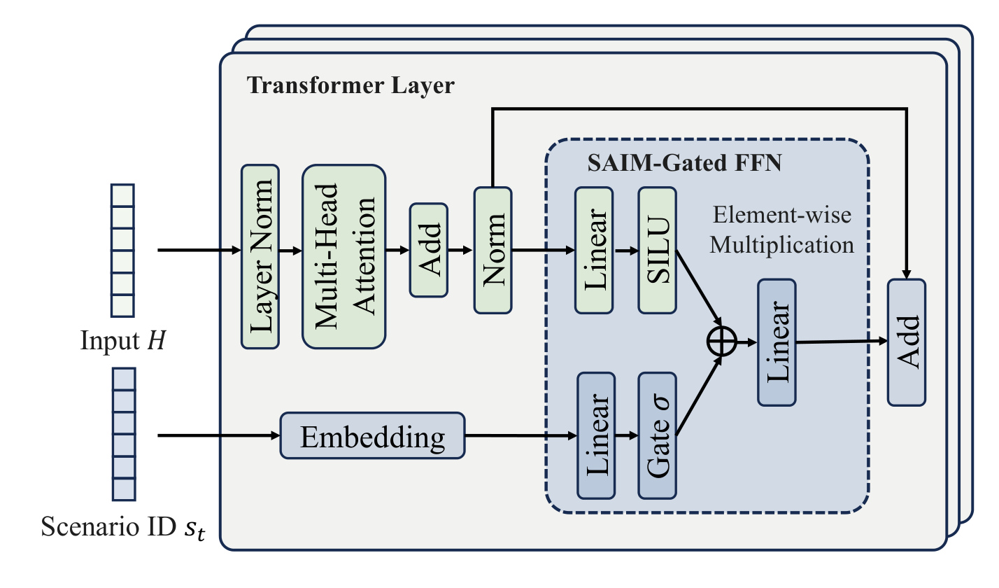
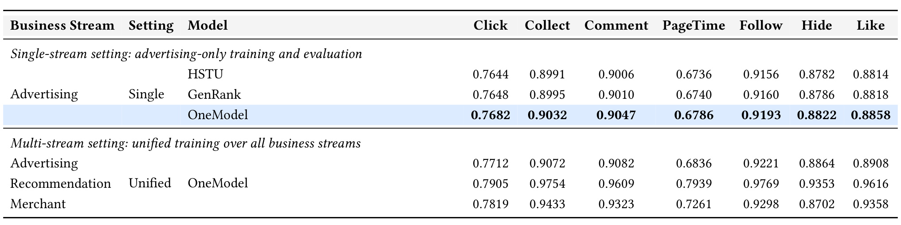
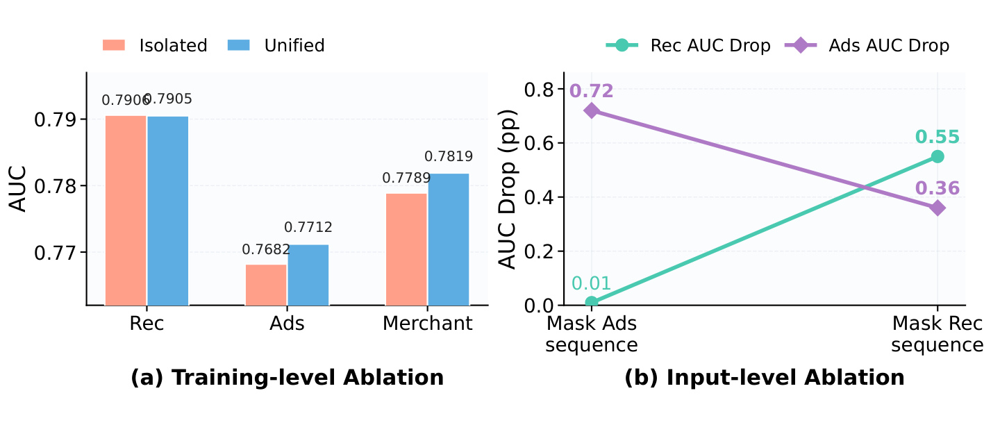
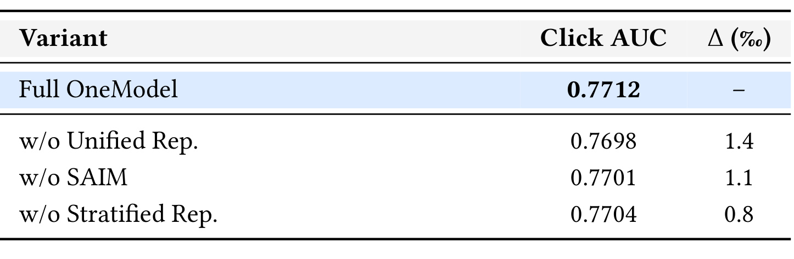
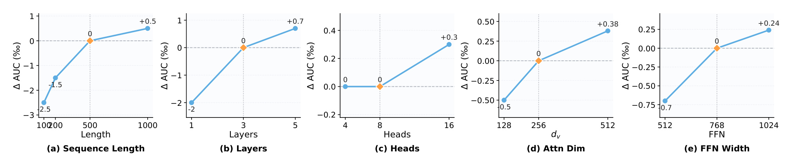
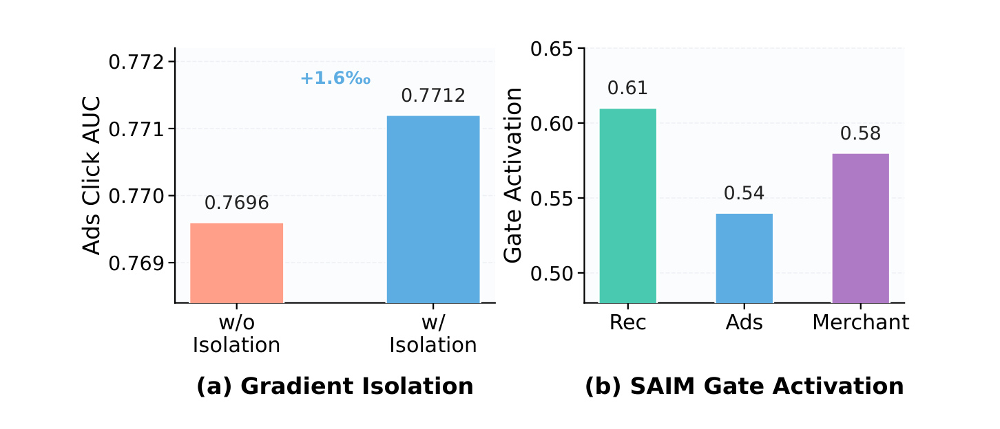
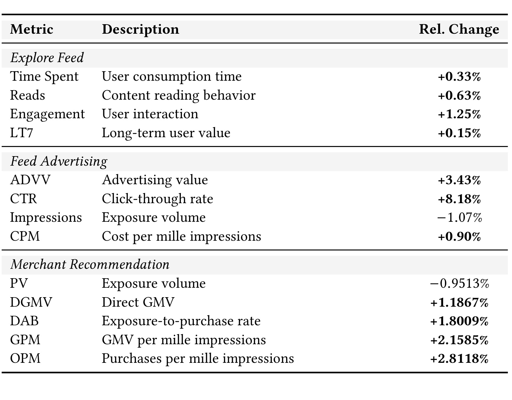
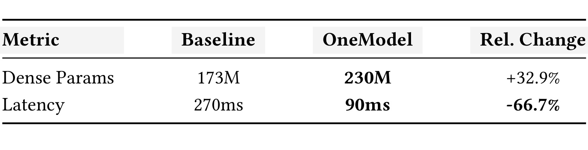

OneModel：面向平台级多场景最终排序的统一基础模型
OneModel: A Unified Foundation for Platform-Scale Multi-Scenario Ranking 是小红书团队于 2026 年 8 月 19 日公开的 arXiv 论文。第一作者是 Yinqi Zhang，19 位作者的主机构均为小红书，涵盖算法、训练基础设施与推理基础设施团队。论文入口：arXiv:2608.18606。本轮未核验到独立代码或项目页，因此笔记中的实现判断只依据论文披露。
平台用户在自然推荐、广告和商家服务中形成连续行为轨迹，但分立排序系统把同一用户的表示和昂贵能力切碎；直接共享又会因特征口径、价值目标与流量规模不同而产生负迁移，同时还要满足长序列最终排序的严格线上时延约束。
1. 背景和问题
1.1 从特征交叉到长序列排序
传统工业排序通常围绕候选物品建立点式判别器：一边是用户、物品、场景特征，另一边是点击、停留、转化等目标，模型通过 Wide & Deep、DeepFM、DIN 一类结构学特征交叉。这条路线经过多年打磨，但当上限开始取决于长历史记忆、内容语义、大表示表和多模态理解时，较浅的特征交叉已难以独立扩展。HSTU、GenRank 等生成式或大序列排序工作因而把焦点移到“行为序列”：用更长上下文、更大模型容量与更细的行为类型建立可伸缩路径。
问题在于，这种 scaling 路径不仅是增加几层 Transformer。它要求长期保留海量用户状态，维护大尺寸 embedding，重复生产内容和多模态特征，并为训练、回放、增量更新与线上推理建立一整套工程链路。如果自然推荐、广告和商家推荐各自重建一套，平台需要支付三次以上的数据、算力、存储与迭代成本。OneModel 的起点就是：不应把长序列能力当成某个单业务的局部模块，而应把它视为平台可复用的用户与内容理解基础。
1.2 三个业务流是一条用户旅程，却不是同一个目标
小红书的自然推荐、信息流广告与商家推荐共享用户、内容和意图线索。一次内容浏览可能暴露消费意图，广告点击可能表达商业偏好，商品转化则提供价值更高但更稀疏的监督。从用户角度看，这些事件本来就按时间交错发生，分立系统却会让每个模型只看到轨迹的一部分。对低流量的广告和商家流，被丢掉的自然推荐历史尤其可惜；它们正是估计兴趣与意图的稠密上下文。
然而，“行为相关”不等于“损失一致”。自然推荐强调兴趣匹配和消费体验，广告要兼顾 CTR、广告价值、曝光与投放效率，商家场景则更关心直接 GMV、下单与千次曝光效率。三者特征表不同，标签密度不同，流量量级也不同。把数据简单混在一起，高频 Rec 样本可能淹没其他流，冲突的目标会给共享骨干带来噪声梯度。因此真正需要回答的不是“能否合并”，而是如何在共享中保留场景语义、专用通道和优化节奏。
1.3 最终排序的线上约束把问题从模型推向系统
多场景统一如果只停在离线用户表示，难度会小得多：每天或每小时计算一次向量，下游业务各自消费即可。OneModel 目标是 final ranking，要在每次请求内面对多个候选，同时接收刚发生的用户事件。如果每个请求、每个候选都重算长序列 Transformer，任何离线提升都可能被时延和 GPU 成本抵消。候选之间若不做注意力隔离，同一请求中的打分还会相互污染；候选 token 若看到真实目标行为，又会造成目标泄漏。
这三层之间还存在明确的因果约束。输入对齐若做得不好，骨干会把 schema 差异当成用户偏好；场景调制若过强，共享模型又会退化成隐式多塔；用户缓存若更新不及时，就会与分层表示所强调的短期意图相冲突。因此线上成功不能只归因于模型容量，还要用消融、scaling、三业务 A/B 与时延对照分别检验。同时还要检查主业务不被低频商业信号拖累，而小业务的收益确实来自共享历史而非额外曝光。这也是后文必须逐层对照证据、不能只读摘要数字的原因。
所以论文的完整问题包含三层：表示层要把异构特征编成可比的跨场景事件；模型层要用共享长序列骨干吸收跨流信息，又用调制和多目标机制阻止负迁移；系统层要把用户编码从候选打分中拆出，才能把更大模型带到产线。OneModel 的主要价值正是把这三层放在一个可验证的统一最终排序框架中，而不是只提出一个新的多任务塔。
2. 方法
2.1 异构事件序列：场景投影与结构上下文
OneModel 先将自然推荐、广告和商家物品各自的 ID embedding、类目 token 与归一化稠密特征拼成 $\mathbf{x}^{(s)}_i$。三类特征可能连维度和语义都不同，因此不能进入同一线性层强行共享。式 (1) 为每个场景保留一个轻量投影，把异构输入转到共享空间：
符号解释：$s$ 是 Rec、Ads 或 Merchant，$\mathbf{W}^{(s)}$ 和 $\mathbf{b}^{(s)}$ 是场景专用的投影参数，$\phi$ 是激活函数，$\mathbf{e}_i$ 是统一维度下的物品表示。这一步共享的是“输出空间”而非“原始 schema”，避免把广告投放特征与内容消费特征错当成同义变量。对齐物品还不够，同一物品在不同场景、不同行为、不同时间间隔下意义不同。式 (2) 将场景指示、行为类型、位置和相邻事件时间差注入事件 token：
符号解释：$i_j$ 是第 $j$ 个互动物品，$s_j$ 和 $a_j$ 表示业务场景与行为类型，$pos_j$ 是序列位置，$\Delta t_j$ 是时间间隔。论文对离散场景与行为使用可学 embedding，对时间差使用多频正弦编码。因此 $\mathbf{z}_j$ 既能进入同一骨干比较，又没有丢掉新近性、行为强度和场景来源。

Figure 2 从左到右呈现两条分工清楚的路径。上路的 Scenario 决定应使用哪个 projector，ID、类目和稠密特征在 Linear+GELU 后变成 $\mathbf{e}_j$；下路从 User Interact 中提取场景、行为、位置和时间间隔，得到上下文 $\mathbf{c}_j$。两条路只在末端相加，得到 $\mathbf{z}_j$。这个结构说明了 OneModel 的“统一”不是抹去业务边界：特征对齐保留场景投影，行为编码显式保留场景 ID。它真正统一的是下游长序列骨干的输入接口，这是后续跨流信息复用的前提。复现时需分别监控三个 projector 的输出尺度，否则某个场景的向量范数即使已对齐维度，仍可能在共享注意力中获得不成比例的权重。
2.2 行为导向长上下文骨干与候选隔离
序列骨干沿用 GenRank 的 action-oriented 组织方式：行为是预测目标，物品是上下文信号，不像将 item 和 action 显式交错为两倍 token 的方案那样扩张序列。其条件目标可写成式 (3)，历史事件则由物品、行为和结构上下文相加：
符号解释：$a_k$ 是当前需要预测的行为，$x_i$ 是物品特征，$\varphi(a_i)$ 是历史行为 embedding，$\mathbf{c}_i$ 包含位置、请求索引、分桶时间差和场景。这种组织把有限上下文窗口更多地用于真实行为步，而不是用于重复的 item/action 标记，但仍通过显式 item-context 交互保留候选侧特征交叉。候选不能直接使用真实行为 embedding，所以式 (5) 把它替换为 mask $\mathbf{m}$。历史 token 和同一请求中的 $M$ 个候选一起进入因果解码器，但注意力同时使用 $M_{causal}$ 和 $M_{cand}$：前者防止看到未来行为，后者阻止候选之间互看。式 (5)-(8) 概括了这条路径：
符号解释：$\mathbf{m}$ 是候选行为遮蔽向量，$\mathbf{H}^{(l)}$ 是第 $l$ 层隐状态，$\mathbf{E}^{pe}$、$\mathbf{E}^{ri}$ 和 $\mathbf{E}^{rt}$ 分别编码交互位置、请求序号和请求前时间差。模型另外使用 ALiBi 式线性偏置表示相对时间，避免大型二次偏置表。候选隔离是最终排序语境下的关键：同请求多候选可以向量化并行，但每个候选只能依据共同历史，不能借用另一个候选的信息。

Figure 3 把整个序列架构由下向上串起：历史中 R/A/M 事件交错排列，候选位置不带真实行为；二者经 GenRank-style Transformer 后，一路对全序列注意力池化得到 $u_{global}$，另一路取最后状态得到 $u_{local}$，拼接投影成最终用户表示 $u$。顶部四个头表明共享骨干同时承担生成预测和 Rec/Ads/Mer 三个业务损失，而不是训完通用向量后再独立拟合三个塔。图中逐步衰减的 $\alpha$ 还预告了后续训练节奏：早期先稳定通用序列偏好，后期再加大业务目标对齐。图中候选和历史共享一个解码器，但候选之间不交换信息，这一点是正确理解向量化最终排序的关键。四个顶部头的输入都来自同一个 $u$，因而任务冲突必须在损失权重和梯度路径上处理。
2.3 SAIM 与分层用户表示：共享中保留场景专业性
全量参数共享会让不同场景在 FFN 通道上互相拉扯，完全分塔又会丢掉基础能力复用。SAIM 选择中间路线：注意力和 FFN 主体共享，但每个 token 根据场景 ID 生成 $d_f$ 维门向量，调制 FFN 中间通道。式 (9)-(10) 为：
符号解释：$\mathbf{e}_{s_t}$ 是 token $t$ 的场景 embedding，$\sigma$ 把门值限制到 $(0,1)$，$\odot$ 是逐元乘，$\mathbf{W}_1$ 和 $\mathbf{W}_2$ 仍是共享 FFN 参数。门控不选专家、不改计算图分支，而是放大或抑制中间通道，因此服务路径比多塔或稀疏 MoE 更简单。这种轻量性也意味着 SAIM 不会自动消除所有目标冲突；它需要与样本平衡、梯度隔离和动态损失权重配合。

Figure 4 中的上分支是标准 Transformer：Input $H$ 经 Layer Norm 和 Multi-Head Attention 后做残差相加；下一个 Norm 之后，才进入 SAIM-Gated FFN。场景 ID 从下方经 embedding、Linear 与 sigmoid 生成门，与 SiLU 激活逐元相乘，再经第二个 Linear 回到残差支路。图中注意力并未按场景分开，所以不同业务仍可以在序列上交换信息；只有后续非线性通道被场景调制。这正好对应设计目标：保留跨流迁移，但不要求三种价值函数在每个 FFN 通道上给出相同反应。在 SAIM 之后，论文再做 stratified user representation。长序列里最后一个状态更靠近即时意图，但不足以代表长期偏好；全序列平均又容易冲淡最近行为。式 (11)-(12) 用注意力池化得到 $\mathbf{u}_{global}$，再和末状态 $\mathbf{u}_{local}$ 拼接：
符号解释：$\alpha_t$ 是序列位置 $t$ 的注意力权重，$\mathbf{h}^{(L)}_t$ 是骨干末层隐状态，$\Vert$ 表示拼接。分层表示不是另建两个用户塔，而是从同一序列输出提取长期与短期统计；因此下游头可在不重算骨干的情况下同时利用稳定偏好和最近意图。
2.4 端到端多场景多目标训练
表示共享只解决“从哪里取信息”，多目标损失还要决定“用什么监督改变它”。OneModel 的式 (13) 同时包含三部分：混合序列的下一物品预测，$K$ 个场景专用监督损失，以及参数正则：
符号解释：$\alpha$ 控制通用序列偏好学习，$\beta$ 控制场景专用对齐，$\lambda_k$ 是任务 $k$ 的权重，$D_k$ 是该场景样本，$\ell_k$ 是对应预测损失，$\gamma$ 控制 $L_2$ 正则。训练中 $\alpha$ 逐步衰减、$\beta$ 逐步增长，即从通用序列建模过渡到业务目标对齐；$\lambda_k$ 与验证 AUC 反向相关，让当前更难的业务得到更多权重。
为防止 Rec 高频流量主导骨干，训练使用 cross-stream batch sampling。业务头早期仍未稳定时，其反向梯度暂时与共享骨干隔离，等专用头热身后再完整联训。超长序列还使用 selective backpropagation，主要对高 perplexity 位置计算梯度，跳过已经容易预测的步骤。这些设计共同说明，统一训练不能仅靠一个加权 loss 完成；样本比例、梯度路径和难例筛选都必须显式控制。
2.5 生产 serving：用户状态缓存与向量化候选打分
最终排序若对每个候选重算用户长序列，计算量会随候选数成倍放大。OneModel 将 $\mathbf{z}_u=f_\theta(H_u)$ 视为可复用用户状态，当新交互到来时增量更新，并缓存到低时延 KV 存储。请求时只需把 $N$ 个候选特征堆成 $\mathbf{V}\in\mathbb{R}^{N\times d_v}$，用场景专用头向量化打分。式 (14) 为：
符号解释：$\mathbf{z}_u$ 是已缓存的用户长序列状态，$\mathbf{V}$ 是候选矩阵，$G_\Phi$ 是 Rec、Ads 或 Merchant 的打分函数，$\mathbf{s}$ 是整个候选集的分数向量。训练时长序列骨干与打分头端到端优化，推理时则把“慢但可复用”的用户编码与“快且随请求变化”的候选打分拆开。
论文还列出四项具体优化。feature decomposition 把用户侧可复用计算与候选侧实时计算分解；user feature prefetching 在排序请求前取回部分特征；shared user-tower computation 防止为同一用户的不同候选重复编码；graph-level inference optimization 消除冗余算子。这些系统手段与模型结构是共同设计的：action-oriented tokenization 先缩短有效序列，候选 mask 允许并行，用户状态缓存再把 Transformer 从热路径移出。只复制某一项优化，很难复现论文报告的整体时延收益。
3. 实验结果
3.1 数据、任务和实现口径
离线实验使用小红书产线的脱敏 10% 流量切片，覆盖 organic recommendation、advertising 与 merchant services，三个流的相对流量约为 $1:0.2:0.15$。用户、物品、上下文和交互特征被组成时间排序的多流序列，数据按时间切分，用早期互动训练、用更晚互动验证与测试，降低未来信息泄漏。由于商业保密，论文没有披露绝对用户数、物品数和互动数；因此“10%”只是流量切片口径，不足以与公开数据集规模直接对比。
默认配置为序列长度 500、item embedding 768 维、3 个 Transformer block、8 个注意力头、FFN 宽度 768、dropout 0.2。训练在 PyTorch、NCCL 分布式环境和 TFRecord 数据上进行，使用 bf16、flash-attention、gradient checkpointing 和 in-batch negative 的 sampled softmax；附录披露 temperature 0.05、学习率 $10^{-4}$、weight decay 0。离线主结果报告 AUC，包括 Click、Collect、Comment、PageTime、Follow、Hide 和 Like；论文也声明使用 LogLoss，但主表没有给出对应数字。
3.2 主结果：单场景对照与三场景统一训练
主表先在广告单场景下比较 HSTU、GenRank 和 OneModel，再给出统一训练的三个业务流。这两组口径不能直接混在一起说“超过基线”：前者控制训练数据为 advertising-only，可判断 action-oriented 结构本身是否更好；后者混合三个流，要检查共享是否让低资源业务受益且不伤害 Rec。

Table 1 显示，广告单场景下 HSTU 的 Click AUC 为 0.7644，GenRank 为 0.7648，OneModel 为 0.7682。因此 OneModel 相对 GenRank 的绝对 AUC 差是 0.0034，也就是 3.4‰，这不是 0.34 个百分点的 CTR 提升。进入统一训练后，Ads Click AUC 进一步到 0.7712，相对单场景 GenRank 差 6.4‰；Collect、Comment、PageTime、Follow、Hide 和 Like 也分别为 0.9072、0.9082、0.6836、0.9221、0.8864 和 0.8908，都高于广告单场景 OneModel。Rec 和 Merchant 在统一模型中的 Click AUC 分别是 0.7905 和 0.7819。这组证据说明一个骨干能同时支持三个业务，但由于论文没有将每个流都与各自完整产线基线在主表逐项对照，不宜把它解读成对所有孤立系统的全面胜出。
3.3 跨场景迁移、输入遮蔽与模块消融
训练级消融把每个流独立训练与三流统一训练直接对比。Rec Click AUC 从 0.7906 到 0.7905，变化只有 -0.1‰；Ads 从 0.7682 到 0.7712，Merchant 从 0.7789 到 0.7819，两者都增加 3.0‰。结合流量比 $1:0.2:0.15$，这个结果符合一个明确故事：高资源 Rec 提供共享表示与意图信号，低资源 Ads/Merchant 获益，而 Rec 本身没有明显负迁移。

Figure 5(a) 直观显示三个流的非对称收益：Rec 的两根柱几乎重合，Ads 与 Merchant 的 unified 柱更高。Figure 5(b) 改从输入信息来源询问因果线索：对 Ads 预测，遮蔽 Ads 自身序列带来 0.72 个 AUC 百分点的降幅，遮蔽 Rec 序列也带来 0.36 个百分点降幅；对 Rec 预测，遮蔽 Ads 序列只下降 0.01 个百分点，遮蔽 Rec 自身序列下降 0.55 个百分点。这里图轴明确写的是 AUC Drop (pp)，与主表中的 AUC 千分差口径不同。输入遮蔽消融因此支持“Rec 历史为 Ads 提供辅助意图”，也说明这种迁移不是对称交换。不过这种 inference-time masking 会同时改变序列长度和内容分布，它是信息价值的证据，并不等价于严格因果效应估计。

Table 2 在统一多流训练的 Ads Click 任务上拆解三个方法部件。完整 OneModel 为 0.7712；移除 Unified Representation 后为 0.7698，绝对下降 1.4‰；移除 SAIM 后为 0.7701，下降 1.1‰；移除 Stratified Representation 后为 0.7704，下降 0.8‰。三个部件都有正向贡献，且特征空间对齐的影响最大。不过这个表只报 Ads Click AUC，不能证明三个模块对 Rec、Merchant 和其他目标的边际贡献顺序也完全相同。三个 ablation 也没有给出两两交互；例如去掉统一表示后，SAIM 的贡献是否仍为 1.1‰，现有数据无法回答。因此只能将三项解读为当前完整配置下的局部贡献。
3.4 离线 scaling：长序列与模型容量的边际收益
Scaling 实验以序列长度 500 为上线基线，架构敏感性则以 3 层、8 头、$d_v=256$、FFN 768 为对照，每次只变一个元素。这一口径值得注意：论文实现段说 item embedding 是 768 维，而 scaling 图中 $d_v$ 基线为 256，两者不应被当作同一参数。图纵轴报告的是相对 Click AUC 千分差，不是线上指标的相对百分比。

Figure 6(a) 显示把序列从 500 减到 100 和 200，AUC 分别下降 2.5‰ 和 1.5‰；从 500 加到 1000 只收获 0.5‰，因此 500 是精度与产线成本的折中点。深度最敏感：1 层比 3 层低 2.0‰，5 层比 3 层高 0.7‰。头数最不敏感：4 头到 8 头几乎不变，16 头也只提升 0.3‰。$d_v$ 从 256 减到 128 下降 0.5‰，增到 512 提升 0.38‰；FFN 从 768 减到 512 下降 0.7‰，增到 1024 只提升 0.24‰。这组结果不是单调 scaling law 的强证明，而是一份更实用的容量优先级：先保证足够深度和中等长序列，再考虑维度和 FFN，盲目加头收益最小。由于每个点只在广告流上报告一个相对值，这个优先级是当前配置的局部结论，不是对所有三场景和任意硬件的通用定律。
3.5 训练稳定性：梯度隔离与 SAIM 门控分化
多业务损失共同更新骨干时，专用头早期的随机性可能被放大成共享表示噪声。论文用两个实验检查对应解法：一是移除梯度隔离是否真的损害 Ads Click AUC，二是 SAIM 门是否学出跨场景差异，还是所有流都收敛到同一平均变换。

Figure 7(a) 中，不用梯度隔离的 Ads Click AUC 为 0.7696，使用后为 0.7712，绝对差 1.6‰。它支持“专用头先热身、再完整影响骨干”的稳定化逻辑，但图中只有一个业务指标，未披露方差、多次重复或显著性。Figure 7(b) 的平均门激活分别是 Rec 0.61、Ads 0.54、Merchant 0.58，说明 SAIM 至少没有对三个流输出完全相同的平均门值。不过仅看整个 FFN 的平均激活，还不能说明哪些通道承载共享知识、哪些通道负责场景专业化；要验证机制，还需要门向量的分布、跨层稳定性或通道级干预。此外，0.61 与 0.54 的差异是否来自流量比例、损失尺度或真实场景专业化，单靠平均值也无法分离。
3.6 线上 A/B：Explore Feed、Feed Advertising 与 Merchant Recommendation
线上实验以当前产线排序系统为 control，用户随机进入对照组或 OneModel treatment 组。表中数字都是指标相对对照组的变化幅度，不是百分点。例如 CTR +8.18% 表示 CTR 相对 control 增长 8.18%，并不是绝对 CTR 加 8.18 个百分点。论文未披露 A/B 持续时间、样本量、置信区间或显著性阈值，因此可以记录方向和数值，但不应自行补成统计结论。

Table 3 必须按业务流分开读。Explore Feed 中，Time Spent +0.33%、Reads +0.63%、Engagement +1.25%、LT7 +0.15%，说明主要收益落在互动与阅读，长期价值指标方向也为正。Feed Advertising 中，ADVV +3.43%、CTR +8.18%、CPM +0.90%，同时 Impressions -1.07%；这不是单纯扩大曝光换取点击，而是曝光变少时点击率和广告价值上升。Merchant Recommendation 中，PV -0.9513%，DGMV +1.1867%、DAB +1.8009%、GPM +2.1585%、OPM +2.8118%；在曝光小幅减少时，直接交易额、曝光到购买率、千次曝光 GMV 和千次曝光购买数同时增长，证据更接近“转化效率提高”而不是“流量变多”。三个场景的成功指标不同，这也反向支持了共享骨干之上仍要保留场景专用头和 SAIM。
3.7 产线性价比：参数增长与时延下降
线上最终排序不能只问 AUC 或业务指标，还要问更大模型是否进了请求热路径。论文将 OneModel 与当前产线基线按 Dense Params 和 Latency 并排报告，但没有在主表给出吞吐、归一化 GPU 成本、P95/P99 时延或缓存新鲜度。因此 Table 4 可以支持“时延大幅下降”，却不足以独立完成全面服务成本对比。

Table 4 中，Dense Params 从 173M 增加到 230M，相对增加 32.9%；Latency 从 270ms 降到 90ms，相对减少 66.7%。两个变化方向相反，说明时延收益不是来自缩小稠密模型，而是来自重构 serving 路径。作者将改善归因于特征分解、用户特征预取、共享用户塔计算和图级推理优化。其中前三项直接减少每请求重复用户侧计算，最后一项减少图中冗余算子。但要在其他系统复现 90ms，还需知道候选数、硬件、batching、KV 存储、网络时延和基线包含哪些特征处理，这些本文并未完整披露。表格也只报一个时延数，无法判断它是平均值还是高分位值；对 final ranking 而言，尾时延往往比平均值更接近产线容量边界。
4. 总结
4.1 我的判断
OneModel 最值得关注的不是某一个全新的 Transformer block，而是它将平台级统一排序需要的几个条件按实际链路连起：异构 schema 通过场景投影对齐，跨流行为进入 action-oriented 长序列，SAIM 为共享 FFN 保留场景通道，全局/局部状态兼顾长短期意图，多目标调度和梯度隔离稳定联训，最后通过用户状态缓存与候选向量化让 final ranking 可上线。每一部分单看并不夸张，系统级价值来自它们的接缝方式。
实验证据也呈现合理的层次。离线主表说明 OneModel 能支持七个目标和三个流；训练与遮蔽消融表明低资源业务从 Rec 历史受益；模块消融给出统一表示、SAIM 和分层表示的独立贡献；scaling 图揭示部署配置的边际收益；三类产品 A/B 则将统一建模落到消费、广告与交易口径。对工程团队而言，更可迁移的问题不是“要不要照搬 OneModel”，而是当平台决定共享长序列能力时，是否同时定义了 schema 边界、场景调制、梯度治理和缓存一致性。
4.2 局限与风险
- 数据规模和可复现性不足。 论文只披露 10% 流量切片与 $1:0.2:0.15$ 相对比例，没有用户数、物品数、交互数、候选数和完整训练资源；本轮也未核验到代码页，外部团队难以复制同量级条件。
- 线上统计信息不完整。 Table 3 给出了相对变化，却没有实验周期、样本量、置信区间、多重检验处理和显著性；小幅指标如 LT7 +0.15% 尤其需要更完整统计证据。
- 负迁移验证仍偏粗。 Rec 的 Click AUC 几乎不变可以说明主目标未明显受伤，但还不能排除小众用户、特定内容类目、新用户或长尾商家上的局部负迁移。SAIM 平均门值不同也只是初步机制证据。
- serving 对比缺少边界条件。 270ms 到 90ms 非常显著，但未披露硬件、P95/P99、吞吐、GPU 成本、预取命中率和用户状态更新滞后；缓存若过旧，就会损失最近意图的价值。
- 论文元数据仍带有模板痕迹。 PDF 中 conference acronym、ACM ISBN、DOI 和收稿日期保留占位文本，当前可确认的公开状态是 arXiv v1，不应将占位信息当成已录用会议或真实 DOI。
4.3 后续跟进
- 跟踪后续版本和代码状态。 优先检查占位会议信息是否被替换，作者是否补充训练细节、显著性和开源实现；这会直接改变可复现性判断。
- 复现一个小型跨域原型。 不必一开始就做三个大型业务，可用两个行为密度不同的任务对比单塔、完全共享、SAIM 和多塔，并同时记录全局/分群负迁移。
- 把缓存一致性纳入模型评测。 除 AUC 与平均时延外，应测量用户状态更新频率、预取命中率、候选数增长曲线、P99 与清空缓存后的降级行为，否则无法判断 90ms 路径的适用范围。
- 深挖 SAIM 的通道级可解释性。 可比较不同层、不同用户群和不同业务事件的门向量，检查它是在选择稳定场景通道，还是仅通过平均缩放抵消损失尺度差异。
综合来看，OneModel 给出了一个工业价值很高的统一排序参考系：它不把多场景简化为“数据混合+共享底座”，而是将输入对齐、通道调制、目标调度和产线解耦都当成一级设计对象。对大模型与推荐系统的交叉研究，它的启示是：长上下文和大容量只提供上限，真正决定能否成为平台基础的，是否能在冲突目标、低时延、状态新鲜度与可运维性之间建立可测量的平衡。